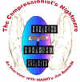

| Plenty/C+,B |
A dramatic opening offers great promise of
fascinating characters, excitement and romance in Nazi occupied
France.
With the gradual decline of its main
character, Plenty too descends an unending spiral into boredom.
The actors are outstanding and some of the scenes come
find an emotional core, but this is a cold screenplay, making it
difficult to enjoy any of the characters. Yes, you want to take
sides with someone, but the warts are all too prominent.
The Feature Archive has articles ranging from A Western is a Western is a Western to Screen Voices, The Heistmasters, Akira Kurosawa, film preservationist Robert Harris and Shawshank Redemption director Frank Darabont.

Compressionist Jim Babinski tells it all about the art of
DVD MPEG Compression. Click the image to learn more.
Check out the Movie
Poster Archive
for short bios and images of Susan Hayward, Kirk Douglas,
Katharine Hepburn and many more. This month's featured star
is Clark
Gable.
Imaging
Science Foundation
The Imaging
Science Foundation promotes proper standards in home theater
viewing. ISF trained technicians offer monitor calibration
services to consumers. The difference in a properly
calibrated monitor can be astounding. Click on the image to find
an ISF member near you.
HOT
LINKS
DVD
Verdict
They
may be judgmental, but that's the point, isn't it. Lots of DVD
reviews plus news and more
The
Home Theater Forum Home Theater
Reference Reviewing System
Looking for
lively and helpful exchanges on home theater, DVD, movies. Visit
this friendly site and get a hardy welcome.

When you read a DVD review it's of utmost importance to know
what equipment is being used to evaluate quality. Click on the
projectors to find out more.